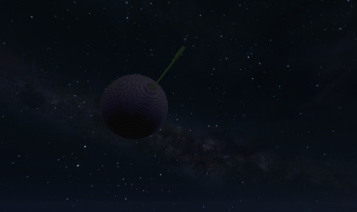

Minecraft is a game that you can download and play by yourself and you can also have friends join your game. However, to do many advanced things you need to run a server and connect to to it. We will be using the Bukkit server. This is an alternate server that has the ability to use plugins.
This isn't a complete tutorial for someone who has never set up a server before. It is for people who have a little bit of server experience, however, if you go to all of the links and read, you can learn how to set up a server. So, maybe it is a complete "guide".
Make sure you have Java Installed:
If you do not, then go to http://java.com/en/download/manual.jsp and download both the Windows Offline (32-bit) and Windows Offline (64-bit) file and install both of them.
Go to http://wiki.bukkit.org/Setting_up_a_server and follow the instructions to set up your server. Use the current "Recommended Build".
The first time you run the server it will generate all of the needed folders and config files. Then you can stop it and add plugins and make config changes.
Download and install the following plugins:
These plugins will enhance the experience, but are not required ot make the space world work:
After putting all of the plugins you downloaded into the "plugins" folder under the server .jar file location (NOTE: If you downloaded a .zip file, unzip it and put the contents there) you need to run the server once. All of the plugins will complain about lacking config files and then generate default ones. Then stop the server again so that we can make changes to the default config.
In the folder where your craftbukkit jar file go into "plugins\Movecraft\types" and create a new empty text file called "spaceship.craft". Make sure the extension is .craft and not .txt and put this text into it:
name: Spaceship
maxSize: 10000000
minSize: 10
allowedBlocks:
- 1
- 68
- 63
- 20
- 323
forbiddenBlocks:
- 12
canFly: true
speed: 20.0
tryNudge: false
flyblocks:
20:
- 0.0
- 100.0
Save and close that file.
Now it is time to move on to Minecraft Client Setup ->
{kind=link}